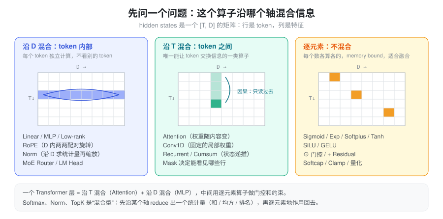
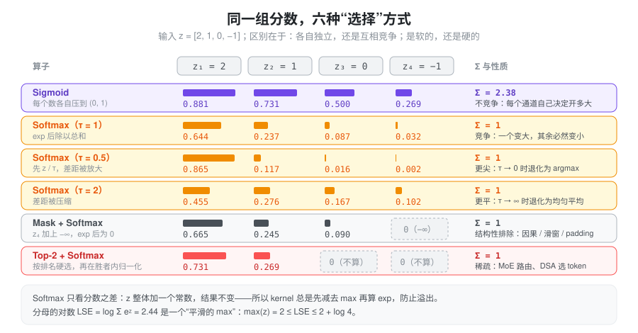
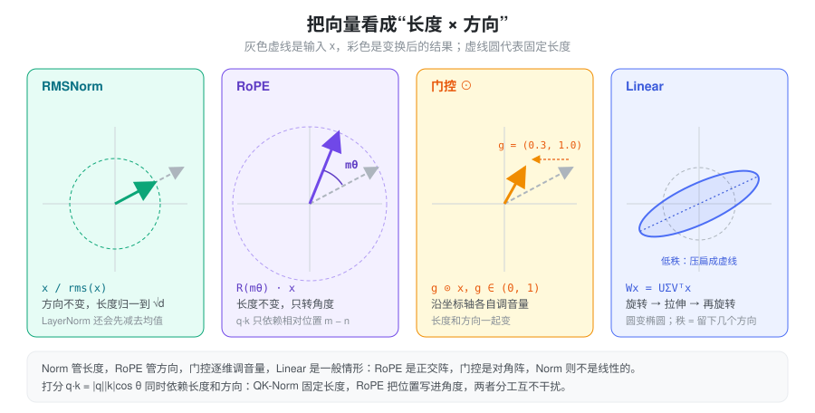
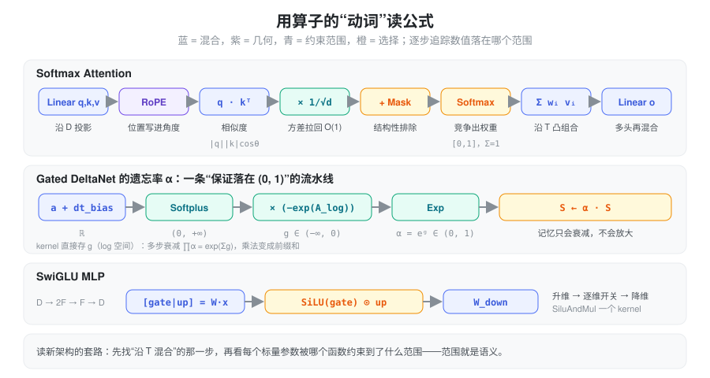

问题：为什么要对基本算子建立直觉
打开任何一个新架构（MLA、Gated DeltaNet、KDA、DSA……），公式看起来都很长，但拆开以后，用到的基本算子不过二十来个：矩阵乘、softmax、sigmoid、exp、norm、旋转、逐元素乘……新架构的“新”，几乎总是同一批算子的不同组合。
如果只把这些算子记成“Sigmoid：映射到 (0,1)”，读公式时仍然要逐项硬啃。更有用的是给每个算子一个动词：它在混合信息、在选择信息、在约束某个数的范围，还是在改变向量的几何（长度或方向）。有了动词，一条公式就能读成一句话——比如 Gated DeltaNet 的遗忘率 \alpha = \exp(-e^{A}\cdot\mathrm{softplus}(a+b))，读作“把任意实数约束成一个 (0,1) 的衰减系数”，而不需要去记它的具体形状。
本页按动词把算子分成五组：
- 混合：Linear、加权求和、Conv1D、Recurrent、外积——信息从哪里流到哪里；
- 选择：Sigmoid、Softmax、温度、Mask、TopK、LogSumExp——谁多拿、谁少拿、谁出局；
- 约束范围：Exp、Softplus、Tanh / Softcap——把一个自由参数关进有语义的区间；
- 几何：RMSNorm、L2Norm、RoPE、门控——管向量的长度和方向；
- 非线性：SiLU、GELU——让层不能被合并成一个矩阵。
第一个问题：沿哪个轴混合
Transformer 里的 hidden states 是一个 [T, D] 的矩阵（暂时忽略 batch 和 head）：行是 token，列是特征。对任何一个算子，先问一个问题——它沿哪个轴把数混在一起：
- 沿 D 混合（token 内部）：Linear、MLP、RoPE、Norm、MoE Router、LM Head。每个 token 各算各的，所以天然可以按 token 并行，也不需要任何 cache。
- 沿 T 混合（token 之间）：Attention、Conv1D、Recurrent / 前缀和。这是唯一能让 token 之间交换信息的一类算子；推理系统里所有关于 KV cache、state cache、因果性、prefill/decode 不对称的复杂度，都来自这一类。
- 逐元素（不混合）：Sigmoid、Exp、SiLU、门控乘法、残差加、Softcap、量化。计算量极小、纯粹 memory bound，所以总是被融合进前后的 kernel。

有些算子是“混合型”：先沿某个轴 reduce 出一个统计量，再逐元素地作用回去。Softmax 沿行求 \sum e^{z}，Norm 沿 D 求均方，TopK 沿候选求排名。识别出这个 reduce 的轴，就知道它在并行切分时需不需要通信（例如 TP 切了 D 维以后，RMSNorm 的均方就必须先 all-reduce）。
一个 Transformer 层因此可以概括为：沿 T 混合一次（Attention），沿 D 混合一次（MLP），中间用逐元素算子做门控和约束，用 Norm 管住尺度。 Linear attention、SSM 替换的只是“沿 T 混合”那一步。
混合：信息从哪里流到哪里
Linear：一组同时问的“问题”
y = xW，W\in\mathbb{R}^{D_{in}\times D_{out}}。最有用的读法是按列看：W 的每一列 w_j 是一个方向，y_j = x\cdot w_j 是“x 在这个方向上有多少分量”。一个 Linear 就是同时问 D_{out} 个问题，每个输出维度是一个问题的答案。
- Q/K/V 投影：同一个 hidden state，问三组不同的问题，分别得到“我在找什么”“我是什么”“我能提供什么”。
- 多头：把 D_{out} 切成 H 份，每份是一组独立的问题。
- 按行看则是另一面：y = \sum_i x_i\, W_{i,:}，输出是 W 各行的加权和，x 给出权重——Embedding 查表就是 x 为 one-hot 的特例。
低秩投影：强制经过一个瓶颈
W = AB，A\in\mathbb{R}^{D\times r}，B\in\mathbb{R}^{r\times D'}，r \ll D。几何上，任何矩阵都可以写成 U\Sigma V^\top：先旋转、再沿 r 个轴拉伸、再旋转（见下文几何一节的图）。秩 r 就是最多留下几个方向，其余方向被压成 0。
低秩不只是省参数，它是一个语义约束：所有信息必须先挤进 r 维。MLA 把 K/V 压进一个共享 latent，LoRA 把权重增量限制在低维子空间，都是在利用“真正有用的方向远少于维度数”这一假设。
加权求和：凸组合 = 在“插值”
o = \sum_i w_i v_i。当 w_i \ge 0 且 \sum w_i = 1（softmax 的输出正好满足），o 是 v_i 的凸组合：结果一定落在这些 v_i 围成的凸包里，不会凭空跑出去。所以 attention 的输出可以理解为“在历史 value 之间插值”，权重越尖，越接近直接复制某一个 value。
Conv1D：固定权重的局部混合
y_t = \sum_{j=0}^{K-1} w_j\, x_{t-j}，每个通道独立（depthwise）。它和 attention 都是沿 T 的加权求和，区别只有两点：权重与内容无关（是学出来的常数），窗口很短（Linear Attention 层里通常是 4）。直觉上它给每个 token 补上“前几个 token 是什么”的局部上下文，让后面的 q/k 不必只靠自己。因果卷积在 decode 时只需缓存最近 K-1 个输入，是一个极小的 state。
Recurrent / 前缀和：把历史折叠成状态
S_t = \gamma_t S_{t-1} + k_t^\top v_t。纯累加（\gamma=1）就是前缀和 cumsum；带衰减就是指数滑动平均。这类算子把“沿 T 混合”从“每次回头看所有历史”变成“维护一个固定大小的摘要”，代价是摘要容量有限。详见 Linear Attention。
外积：一次“写入”
k^\top v\in\mathbb{R}^{d_k\times d_v} 是秩 1 矩阵，可以理解为“在 key 方向 k 上存入 value v”；之后用 q 去乘 S 就是“按 key 读出”。点积 q\cdot k 是比较（两个向量变一个数），外积 k^\top v 是存储（两个向量变一个矩阵）。Softmax attention 只用点积，Linear attention 用外积把每个 token 写进状态。
选择：谁多拿、谁少拿、谁出局
给一组分数 z，“选择”类算子决定每一项拿多少权重。区分它们只需要两个问题：各项之间是否竞争（总量是否固定），以及选择是软的还是硬的。

Sigmoid：各自独立的开关
\sigma(z) = \frac{1}{1+e^{-z}}\in(0,1)。每个数独立决定自己开多大，加起来不等于 1。所以它适合门：每个通道 / 每个 head 自己决定放行多少，不需要和别人抢。Linear attention 的写入强度 \beta、gated attention 的输出门、部分 MoE 的路由打分都用它。
一个好记的等式：\sigma(z) = \mathrm{softmax}([z, 0])_1——sigmoid 就是“和一个固定为 0 的对手”做二选一的 softmax。
Softmax：在固定预算里竞争
p_i = e^{z_i}/\sum_j e^{z_j}。总量恒为 1，一个变大，其余必然变小。这正是“注意力”的含义：注意力是有限的，分给了这个 token 就少分给那个。
三个必须记住的性质：
- 只看差值：z 整体加常数，结果不变。所以 kernel 一定先减去 \max z 再算 exp（数值稳定），这也是 Mask 能用 -\infty 实现的原因。
- 差 1 意味着倍数 e：z_1 - z_2 = 1 时 p_1/p_2 = e \approx 2.7。分数是对数尺度的权重。
- 温度控制尖锐度：\mathrm{softmax}(z/\tau)。\tau\to 0 退化为 argmax（硬选一个），\tau\to\infty 退化为均匀平均。采样的 temperature 就是它。
缩放 1/\sqrt{d}：其实是一个温度
如果 q, k 的每一维独立、方差为 1，则 q\cdot k = \sum_{i=1}^{d} q_ik_i 的方差是 d。不缩放的话，d=128 时分数的标准差约 11，softmax 几乎总是 one-hot，梯度也几乎为 0。除以 \sqrt{d} 把方差拉回 1，等价于取温度 \tau = \sqrt d。
Mask：结构性排除
给分数加上 -\infty，exp 之后精确为 0，且不影响其余项之间的相对比例。因果 mask、滑动窗口、padding、prefix-cache 的块边界都是这个操作——它表达的是“按规则不能看”，而不是“学出来不想看”。
TopK：硬选择
按排名留下前 k 个，其余直接丢弃（连计算都省掉），再在胜者内部做 softmax 或 sigmoid 归一化。它是唯一能真正省算力的选择：MoE 只激活 k 个专家，DSA 只对 top-k 个 token 做 attention。代价是不可导、且容易“马太效应”，所以 MoE 路由常配合 bias 或负载均衡项来调整排名。
LogSumExp：平滑的 max，也是可合并的“摘要”
\mathrm{LSE}(z) = \log\sum_i e^{z_i}，满足 \max z \le \mathrm{LSE}(z) \le \max z + \log n。它是 softmax 的分母，也是一个“平滑版的 max”。
它在推理里的真正价值是可合并：把 key 分成两段分别算 attention，得到 (o_a, \mathrm{lse}_a) 和 (o_b, \mathrm{lse}_b)，就能精确拼回整体结果：
o = \frac{e^{\mathrm{lse}_a}\, o_a + e^{\mathrm{lse}_b}\, o_b}{e^{\mathrm{lse}_a} + e^{\mathrm{lse}_b}},\qquad \mathrm{lse} = \log\left(e^{\mathrm{lse}_a} + e^{\mathrm{lse}_b}\right)
Flash Attention 的 online softmax、split-KV decode、cascade attention、DCP 跨卡合并都是这一个公式。
约束范围：值域就是语义
网络里很多标量（遗忘率、写入强度、步长、门）都有天然的取值范围：遗忘率必须在 (0,1]，步长必须为正。网络直接输出的是任意实数，所以需要一个函数把它关进正确的区间。看到一个陌生公式时，先看最外层的函数决定了值域，值域基本就告诉你这个量的语义。
| 函数 | 值域 | 典型语义 | 直觉 |
|---|---|---|---|
| \sigma(x) | (0, 1) | 门、写入强度 \beta、概率 | 软开关；x=0 时半开 |
| e^{x} | (0, +\infty) | 正的尺度、步长、未归一化权重 | 加法 → 乘法；x 加 1，结果乘 e |
| \mathrm{softplus}(x)=\log(1+e^x) | (0, +\infty) | 正的步长 \Delta t、强度 | 平滑的 ReLU；大 x 时 \approx x，不像 exp 那样爆炸 |
| e^{-e^{A}\cdot\mathrm{softplus}(x)} | (0, 1) | 遗忘率 \alpha、衰减 | 正数取负再 exp，必然落在 (0,1) |
| \tanh(x) | (-1, 1) | 有界的有符号值 | 中心对称的 sigmoid：\tanh x = 2\sigma(2x)-1 |
| c\cdot\tanh(x/c) | (-c, c) | Softcap：限制 logit 上界 | 小值几乎不变，大值被平滑地压住 |
这几个函数之间关系很紧：\frac{d}{dx}\mathrm{softplus}(x) = \sigma(x)，\mathrm{SiLU}(x)=x\,\sigma(x)，\tanh 是拉伸平移过的 \sigma。记住 \sigma 和 \exp，其余都能推出来。
Exp 与 log 空间：把连乘变成前缀和
衰减系数要跨很多步连乘：\prod_{\tau=j+1}^{t}\alpha_\tau。直接连乘既慢又会下溢；如果存的是 g = \log\alpha，连乘就变成 \exp\left(\sum g\right)，而 \sum g 就是一个前缀和，可以按块并行计算。这就是为什么 Mamba2 / GDN / KDA 的 kernel 接口传的都是 g（log 空间的衰减），而不是 \alpha 本身。
同理，概率在 log 空间相加、softmax 在 log 空间合并（LSE）——乘法难并行、易溢出时，就换到 log 空间做加法，是一条反复出现的工程套路。
Softcap：不让任何一个 logit 一家独大
\mathrm{softcap}(z) = c\cdot\tanh(z/c)。Gemma 2 对 attention 分数和最终 logits 都做了这一步。它和 1/\sqrt d 的区别在于：缩放对所有分数一视同仁，softcap 只压住极端值，小分数几乎不受影响。
几何：长度和方向分开管
把向量写成“长度 × 方向”，x = \lVert x\rVert\cdot \hat x，很多算子的作用就一目了然：有的只管长度，有的只管方向，有的两者一起改。

RMSNorm / L2Norm：只管长度
\mathrm{RMSNorm}(x) = \frac{x}{\sqrt{\frac1d\sum_i x_i^2 + \epsilon}} \odot \gamma
除以 RMS 等价于把 \lVert x\rVert 归一到 \sqrt d，方向完全保留，再用可学习的 \gamma 逐维重新缩放。它的意义是让下一层看到的输入尺度恒定：无论残差流累积到多大，进入 attention / MLP 的数都在 O(1)。LayerNorm 多做一步减均值（去掉沿全 1 方向的分量）；L2Norm 不带 \gamma、归一到 1，常用于 QK-Norm 和 linear attention 的 q/k。
为什么 linear attention 必须对 q/k 做 L2Norm？因为它的状态是外积累加，\lVert k\rVert 直接决定写入强度：key 长度失控，状态就会爆炸；固定长度后，写入强度只由 \beta 决定。
RoPE：只管方向
把 D 维两两配对，每对看成一个复数，按位置 m 旋转角度 m\theta_i：
\begin{pmatrix} x_1' \\ x_2' \end{pmatrix} = \begin{pmatrix} \cos m\theta & -\sin m\theta \\ \sin m\theta & \cos m\theta \end{pmatrix} \begin{pmatrix} x_1 \\ x_2 \end{pmatrix}
旋转不改变长度。关键性质是：q 转 m\theta，k 转 n\theta，点积只剩下夹角之差，\langle R_m q, R_n k\rangle = \langle q, R_{n-m} k\rangle——绝对位置在点积中自动变成了相对位置。不同配对用不同频率 \theta_i = b^{-2i/D}：高频对分辨近距离，低频对编码远距离，像一个多指针的时钟。YaRN 等长度外推方法就是在改这些频率。
门控 \odot：逐维调音量
g\odot x 是对角矩阵乘法：每一维独立缩放，长度和方向都会变。和 Linear 的区别是不混合维度——它不产生新特征，只决定已有特征放行多少。门的取值来自 sigmoid（不竞争），所以每一维可以同时全开或同时全关。
Residual：保留一条恒等通路
x_{l+1} = x_l + f(x_l)。每层只学一个增量，而不是重写整个表示；梯度可以沿恒等通路直接传回。由此，残差流可以看成所有层共享的一块“黑板”，每层读一部分、写一点增量。Pre-Norm（先 norm 再进 f）让黑板本身的尺度可以自由增长，而每层读到的都是归一化后的版本。
Linear：一般情形
上面几种都是 Linear 的特例或近亲：RoPE 是正交矩阵（只转不拉），门控是对角矩阵（只拉不转），Norm 本身不是线性的（缩放系数依赖输入）。一般的 W = U\Sigma V^\top 把圆变成椭圆：先转、再沿主轴拉伸、再转；奇异值为 0 的方向被彻底丢弃。
打分 q\cdot k = \lVert q\rVert\lVert k\rVert\cos\theta 同时依赖长度和方向，于是可以清楚地分工：QK-Norm 固定长度（防止分数爆炸），RoPE 把位置写进角度，剩下的方向差异才是内容的相似度。
非线性：让层不能合并
如果只有线性层，W_2W_1 可以合并成一个矩阵，堆多少层都没用。非线性函数插在中间打断这种合并（见 Activation）。
- ReLU \max(0,x)：硬开关，负半轴完全关闭。
- SiLU x\,\sigma(x)、GELU x\,\Phi(x)：都可以读成“用自己给自己开门”——x 越大门越开，x 很负时门关上，中间平滑过渡。
- SwiGLU \mathrm{SiLU}(xW_g)\odot(xW_u)：把“开门”和“内容”拆成两路投影，门来自一路、内容来自另一路，再逐元素相乘。这比单路激活多了一个自由度：决定“放不放行”的特征和“放行什么”的特征可以不同。
从这个角度看，门控 MLP 和 gated attention、linear attention 的 \beta 是同一种结构：一路算内容，一路算门，逐元素相乘。
组合：用动词读公式
有了上面的动词，读一个新公式的套路是：先找沿 T 混合的那一步，再看每个标量被哪个函数约束到了什么范围。

- Softmax attention：Linear 投影（沿 D）→ RoPE 写入位置（几何）→ 点积比较 → 1/\sqrt d 控温 → Mask 排除 → Softmax 竞争 → 加权求和（沿 T 的凸组合）→ 输出投影。一句话：“按相似度在历史 value 之间插值”。
- Gated DeltaNet 的遗忘率：g = -e^{A}\cdot\mathrm{softplus}(a + b_{dt})，\alpha = e^{g}。从右往左读：任意实数 → softplus 变正 → 乘一个可学习的正数再取负 → exp 落进 (0,1)。一句话：“每个 head 学一个保证不放大的衰减率”，而且以 log 形式 g 交给 kernel。
- SwiGLU MLP：升维 → 一路做门、一路做内容 → 逐维开关 → 降维。一句话：“在宽空间里有选择地放行特征”。
在 SGLang 里的落点
这些算子在 SGLang 中大多是独立的 layer 或融合
kernel，命名本身就体现了上面的分组（路径相对
python/sglang/）：
| 动词 | 算子 | 位置 | 值得知道的细节 |
|---|---|---|---|
| 混合（D） | Linear | srt/layers/linear.py：QKVParallelLinear、MergedColumnParallelLinear、RowParallelLinear |
多个投影合并成一个大 GEMM：q/k/v 一次算完，gate/up 一次算完 |
| 混合（T） | Conv1D | srt/layers/attention/mamba/causal_conv1d.py：causal_conv1d_fn
/ causal_conv1d_update |
prefill 走整段卷积，decode 只用缓存的最近 K-1 个输入 |
| 选择 | LSE 合并 | srt/layers/attention/merge_state.py：merge_state |
Triton 版先减去两者的 max_lse 再
exp，与上文合并公式一致 |
| 选择 | TopK | srt/layers/moe/topk.py：TopK、fused_topk、biased_grouped_topk_gpu |
分组 / 加 bias 后再排名，是对硬选择的修正 |
| 约束 | Softplus / Exp / Sigmoid | kernels/ops/attention/fla/fused_gdn_gating.py |
一个 kernel 同时算 g=-e^{A}\,\mathrm{softplus}(a+b_{dt}) 与 \beta=\sigma(b)；softplus 在 x>20 时直接返回 x，避免 exp 溢出 |
| 约束 | Softcap | srt/layers/logits_processor.py（final_logit_softcapping）、srt/layers/radix_attention.py（logit_cap） |
logits 上是 c\cdot\tanh(z/c)，GPU 上走融合 kernel |
| 几何 | RMSNorm | srt/layers/layernorm.py：RMSNorm、GemmaRMSNorm |
传入 residual 时先做残差加再 norm，一个
kernel 完成；Gemma 的权重语义是 1+\gamma |
| 几何 | RoPE | srt/layers/rotary_embedding/：RotaryEmbedding，utils.py
的 apply_rotary_emb |
is_neox_style 决定配对方式：前后两半配对 vs
相邻两维配对，数学相同、内存布局不同 |
| 非线性 | SwiGLU | srt/layers/activation.py：SiluAndMul |
输入是 gate、up 两半拼在一起的张量，native 实现就是
silu(x[..., :d]) * x[..., d:] |
一个反复出现的工程模式：逐元素和“reduce + 逐元素”类算子几乎从不单独成 kernel。它们计算量可以忽略，成本全在读写显存，所以总是融合进相邻的算子（residual + norm、norm + 量化、silu + mul、gating 的四步合一、softcap + cast）。看到一个新的 fused kernel，基本可以按“它把哪几个动词粘在了一起”来理解。
速查表
| 操作 | 动词 | 混合的轴 | 值域 / 不变量 | 常见架构语义 |
|---|---|---|---|---|
| Linear / MatMul | 混合 | D | — | 投影、问 D_{out} 个问题 |
| Low-rank Projection | 混合 | D | 秩 \le r | 瓶颈、latent 压缩、LoRA |
| Weighted Sum | 混合 | T | 凸组合（权重和为 1 时） | attention 读出、插值 |
| Conv1D | 混合 | T（局部） | — | 短程上下文 |
| Recurrent / Cumsum | 混合 | T（因果） | 状态大小固定 | 记忆、流式计算 |
| Outer Product | 混合 | — | 秩 1 | 向状态写入一个 key→value |
| Sigmoid | 选择 / 约束 | 逐元素 | (0,1)，不竞争 | 门、写入强度 |
| Softmax | 选择 | 沿候选 reduce | \Sigma=1，平移不变 | 竞争性分配 |
| Temperature / 1/\sqrt d | 选择 | 逐元素 | — | 控制尖锐度 |
| Mask | 选择 | 逐元素 | 被 mask 项精确为 0 | 因果、窗口、padding |
| TopK | 选择 | 沿候选 reduce | 只保留 k 项 | MoE 路由、稀疏 attention |
| LogSumExp | 选择 | 沿候选 reduce | \max \le \mathrm{LSE} \le \max+\log n | 分块 attention 合并 |
| Exp | 约束 | 逐元素 | (0,\infty) | 正尺度、log 空间衰减 |
| Softplus | 约束 | 逐元素 | (0,\infty) | 正的步长 |
| Tanh / Softcap | 约束 | 逐元素 | (-c, c) | 限制 logit 上界 |
| RMSNorm / L2Norm | 几何 | D 上 reduce | 长度固定，方向不变 | 稳定尺度、QK-Norm |
| RoPE | 几何 | D 内两两配对 | 长度不变 | 相对位置 |
| Elementwise Multiply | 几何 / 门控 | 逐元素 | — | 门控、特征调制 |
| Residual Add | 几何 | 逐元素 | 保留恒等通路 | 增量更新、梯度通路 |
| SiLU / GELU | 非线性 | 逐元素 | — | 自门控、增强表达能力 |
小结
模型里的基本算子不多，难的是把它们读成意义而不是公式。先问“沿哪个轴混合”，就能区分出决定推理复杂度的那一步（沿 T）和可以随意并行的部分（沿 D、逐元素）；再问“这个数被约束到了什么范围”，值域几乎就是它的语义——(0,1) 是门或遗忘率，\Sigma=1 是竞争性权重，正数是尺度或步长；最后把几何算子拆成“管长度”和“管方向”，Norm 和 RoPE 的分工就自然清楚了。新架构在这三个问题上的回答，通常就是它全部的设计。